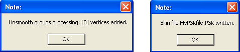
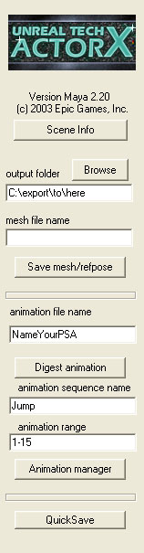

UDN
Search public documentation:
ActorXMayaTutorial
日本語訳
中国翻译
한국어
Interested in the Unreal Engine?
Visit the Unreal Technology site.
Looking for jobs and company info?
Check out the Epic games site.
Questions about support via UDN?
Contact the UDN Staff
中国翻译
한국어
Interested in the Unreal Engine?
Visit the Unreal Technology site.
Looking for jobs and company info?
Check out the Epic games site.
Questions about support via UDN?
Contact the UDN Staff
How to export animations using ActorX and Maya
Document Summary: A tutorial showing how to export animations using ActorX with Maya. Document Changelog: Created by Vito Miliano?. Updated by Erik de Neve?.- How to export animations using ActorX and Maya
Install the Plug-In
- Download the ActorX plug-in for Maya and copy it to your plug-ins directory.
- Launch Maya, then enable the plug-in (go to Settings->Plug-In Manager) by checking the "loaded" check-box. Check "auto load" if you want it to be automatically loaded every time you run Maya.

Setting up your scene
The plugin will recognize both regular polygonal, textured geometry as well as skin clusters. The main requirement is that your mesh consists of a single hierarchy, linked together with joints. The exporter doesn't care what methods are used to animate the joints; the entire scene is sampled through the desired frame range, and at each frame the end result is what gets exported. Be aware of the axes and orientation: typically, in Maya Y is up, X points to the right, Z points towards the viewer out of the screen. On export to a .PSK, the Y coordinate signs are flipped to comply with Unreal's handedness (relative orientation of axes.) In Unreal, the Z axis is up, Y points to the right, and X out of the screen toward the viewer. So you will usually need to adjust the mesh back to the desired orientation using the Mesh properties tab in the Animation browser - expand "Mesh", then expand the Rotation variable, which offers Pitch, Roll and Yaw - these are 16 bit integers, where 65536 equals a full 360 degree rotation. Multiple materials can be used in the scene. They will end up as multiple material slots in the final mesh, and the order will be arbitrary by default, unless you force it by appending "skinXX" tags to the names of the materials - i.e., if the material names are Body and Head , renaming them to Body__Skin00 and Head__Skin01 will tell the exporter to obey that order when creating the .PSK file. In the Maya exporter, any characters following the double underscore will be cleaned up from the final .PSK. Maya has several levels of named materials and textures; the exporter retrieves the names from the "ShadingEngine" tags - that is, the first tag that comes up in properties when you double click on a shader in the multilister. This not only affects the order of slots for skeletal (and static) meshes, but can be used to influence rendering order as well. Note that in Maya 5.0, the effect of IK handles on animation may not get exported correctly unless you ensure they have their "Sticky" attribute set.Export the skeleton and mesh
- Load a scene containing the actor you wish to export.
- Bring up the ActorX dialog by typing "axmain" in the MEL command window at the bottom of Maya.
- Fill in the various fields as follows:
- Output folder: enter the name of the directory where you wish to save the .PSK file. We recommend putting an "Unreal Files" directory under your actor's folder. The browse button is very useful here.
- Mesh file name: enter the name for the .PSK file. We recommend the name of your actor.
- Click the "Save mesh/refpose button. You can do this with any frame of the animation. It is recommended that your model's reference pose be in a relaxed, spread eagle pose for ease of use.
 After you save the mesh/refpose, a few windows will pop up if all went well.
After you save the mesh/refpose, a few windows will pop up if all went well.

Export your animations
There are two steps for exporting animations. First, load the scene containing your animation(s) and "digest" an animation to read it into memory. Repeat for as many animations as you would like to export this session. Second, add these new animations to a PSA file and save it back out.Digest an animation
- Load the file containing the animation you wish to export.
- Bring up the ActorX dialog by typing "axmain" in the MEL command window at the bottom of Maya.
- Fill in the various fields as follows:
- Output folder: same as for skeleton/mesh above.
- Animation file name: we recommend the same as the mesh file name (they will have a different extension to help you tell them apart). Enter the name of your existing .PSA file if you wish to add this animation to that existing .PSA
- Animation sequence name: this is how the animation will be identified within the .PSA file.
- Animation range: specify the frames in the current scene that define this animation. (Format is `4-45'; number, hyphen, number)

- Make sure that the range slider and the time slider show 0 as the first frame. (Note: this is a superstitious behavior on our part to avoid a periodic crashing bug in ActorX. Skip this step at your own peril)
- Click "Digest Animation". When it is done, you should see a pop-up message box describing the animation. If you don't see this pop-up then something went wrong and we recommend restarting Maya at this point because the plug-in is most likely now in a corrupted state.
- Repeat steps 1-5 for as many animations as you would like to export this session. We recommend not trying to do too many at once in case ActorX crashes and you have to start over.

Add your animations to a .PSA file
Once you have digested one or more animations you are ready to add them to a .PSA file.- Bring up the "axmain" dialog if it is not already displayed.
- Click the "animation manager" button to display the animation manager.
- If you are adding your animations to an existing .PSA file, click "Load" to load the .PSA file. (assumes that you already provided the name of the animation file in step 3b of the previous section. If not, then use the "Load As..." button)
- On the left in the "animations" list you should see the animations that you have just digested. On the right you will see any animations that already exist in the .PSA file. This will be empty if you are creating a new .PSA file.
- Select your new animations and click "-->" to add your animations to the output package.
- Click "Save" to save the .PSA file back out. (assumes you already provided the name of the animation file previously)

Batch Processing
This option is disabled.Additional ActorX options
ActorX also has several additional options. By typing "axoptions" in the MEL command window, you can bring up this options window. Note, this cannot be opened while the axmain window is open. Simply close one window before opening the next. We'll step through the options in order.Persistent Settings and Paths
These two options are fairly self explanatory; when checked, they will keep your settings in the fields above them, so that you won't have to re-enter them every time you want to export a mesh or an animation.Skin Export
These options will determine what conditions need to be filled in deciding the exported geometry/animation.All Skin-Type
If this is checked, every mesh in the file bound to a skeleton it will be exported.All Textured
All geometry that has a texture on it will be exported.All Selected
This option is disabled.Force Reference Pose T=0
This option will force the use of the pose at T=0 as the reference pose. Only useful in case you're exporting your PSK from a file that also has animation at other frames, and somehow the first frame of the slider isn't frame 0 in the animation. By default, the engine will use the first frame of the active slider range for exporting the PSK file, which is why we recommend that frame 0 is part of the active range. In general, you should always export your PSK from a known, specially posed, static reference pose, so there is no potential for exporting a random pose as your reference pose.Tangent UV Splits
Always leave this option off. Otherwise, ignore this option.Bake Smoothing Groups
Smoothing on skeletal models is handled somewhat strangely in UnrealEd. If you try to put smoothing groups on a character model, the exporter will break your model along the edge of the groups, and make that section its own separate piece. This process involves dividing vertices along smoothed edges. It will then attempt to smooth the individual piece by itself, although it will still appear to be part of a larger `connected' mesh. In other words, in exchange for smoothing, you will increase your vertex count. The more smoothing groups you have, the more vertices you will have. Therefore, smoothing groups are discouraged on skeletal models; it is recommended that you leave this option unchecked.Underscores to Spaces
This is fairly self-explanatory. Names in your maya file, such as joint names, containing underscores will be affected.Automatic Triangulate
Very important. If the mesh is composed of quads when exported, errors will result when brought into UnrealEd. Triangles will be missing. However, it is recommended to triangulate the mesh in Maya yourself for more predictable triangulation.Bones
Cull Unused Dummies
This option is disabled.Cull Root Dummy
This option is disabled.Hierarchy as bones
Ignore this option. Currently, results are inconsistent.Motion
Fix Root Net Motion
If your model is animated such that the root bone moves, this option gives you the opportunity to disable that motion. Meaning, if you create a run cycle in Max that translates forward, this option will make it look as if the model is running in place in UnrealEd.Hard Lock
Ignore this option.Logfiles/No Log Files
This is pretty self-explanatory. These are just a convenient source for people to check if they suspect something isn't exporting correctly. You can find a variety of information here; bones list with heirarchy information, vertex/face/frame numbers and material # slots etc. Besides verifying that the skeletal and skin data exported as expected, you would want to look at these for example if you want to know what the internal name of the bones are, for using bone controllers or attachments.Script Template
Script used to be necessary to import models and animations into Unreal. Thankfully, this is no longer true. Unless you know what you are doing with these fields, ignore them.Additional MEL commands
axwritesequence: A quicksave command for skeletal animations which writes out the currently loaded scene, with its entire animation range as a single sequence with the sequence- and .PSA filename identical to the Maya source art filename.
axprocesssequence: always saves the .psa to the source art folder, and otherwise works just like "axwritesequence".
axwriteposes: Similar to axwritesequence, but dumps each frame in a single-pose PSA file, and attaches the frame number to each file and internal sequence name. Note: Some versions of the editor's animationbrowser importer don't properly handle importing/displaying single frame sequences.
See also the new persistent "no popup confirmations" checkbox in thec"axoptions" window to make these commands effectively interaction-free.
Since Version 2.24, there's the axexecute command line with options to perform both skin- and animation export entirely from
the MEL command line with the following, mostly self-explanatory options, which can be combined in random order:
axexecute [options and switches] - -path "[destination path]"
- -skinfile [.psk skin file name]
- -autotri
- -unsmooth
- -sequence [sequence name]
- -range [startframe] [endframe]
- -rate [rate]
- -saveanim
- -animfile [.psa anim file name]